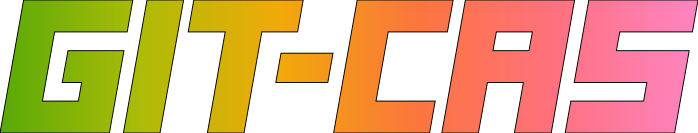
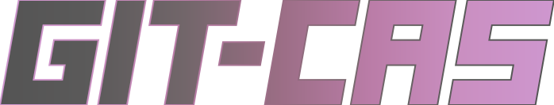

git-cas.svg

Each SVG stacked vertically on white.
git-cas.svg
git-cas-neon-loop.svggit-cas-moss-loop.svggit-cas-ice-loop.svggit-cas-plum-loop.svg
The same SVGs stacked vertically on black.
git-cas.svggit-cas-neon-loop.svggit-cas-moss-loop.svggit-cas-ice-loop.svggit-cas-plum-loop.svg